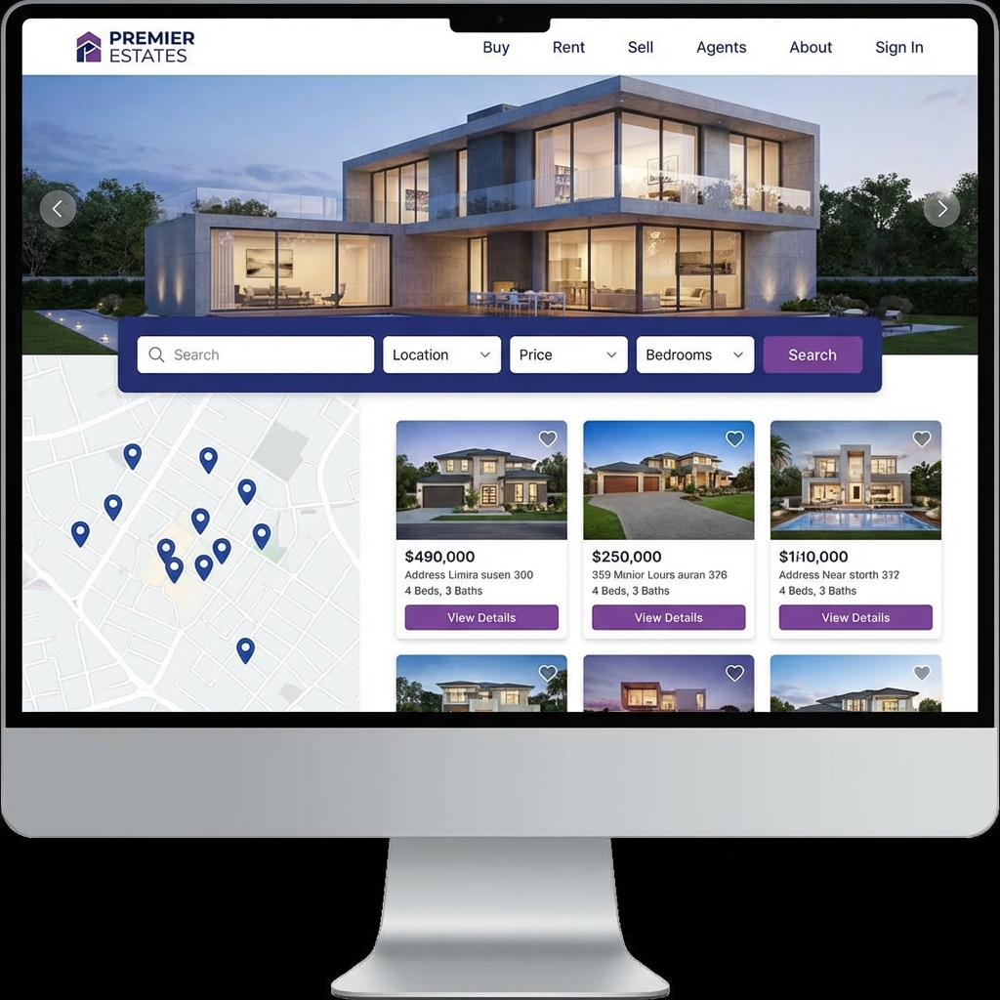

Real Estate Portal
A comprehensive property listing platform with advanced search filters, interactive map views, virtual property tours, and a complete agent management system — connecting buyers with their dream properties.

Project Overview
The vision behind this project
Connecting People With Properties
The Real Estate Portal was built to digitize and streamline the property search and listing process. The platform serves three user types: property seekers who can browse and filter listings, property owners who can list and manage their properties, and real estate agents who use the platform as a complete business management tool.
At its core, the portal features a powerful search engine with multi-faceted filtering — users can narrow results by location, price range, property type, number of bedrooms, amenities, and more. An interactive map view lets users explore properties geographically, while detailed listing pages include photo galleries, floor plans, neighborhood info, and virtual walkthrough tours.
The agent management system is a standout feature, providing agents with their own dashboard to manage listings, track inquiries, schedule viewings, and monitor their portfolio performance with analytics and lead management tools.
Key Features
What makes this portal exceptional
Advanced Search
Multi-criteria search with filters for location, price, property type, bedrooms, bathrooms, lot size, year built, and amenities — with AJAX-powered instant results.
Interactive Map View
Google Maps integration showing property locations with custom markers, cluster grouping, and info windows with property previews — browse properties by neighborhood visually.
Virtual Tours
360° virtual walkthrough tours allowing potential buyers to explore properties remotely with interactive hotspots for room-to-room navigation.
Agent Dashboard
Complete agent portal with listing management, inquiry tracking, viewing schedules, commission calculator, and performance analytics.
Saved Searches & Favorites
Users can save properties to favorites, create saved searches with custom criteria, and receive email alerts when new matching listings are added.
Mortgage Calculator
Built-in mortgage calculator with adjustable parameters for down payment, interest rate, and loan term — showing monthly payment breakdowns and amortization schedules.
Tech Stack
Technologies powering this project
PHP
Server-side logic with MVC architecture, PDO for database operations, and session management
MySQL
Relational database with optimized queries, spatial indexing for location-based searches, and full-text search
JavaScript
Dynamic frontend with AJAX requests, Google Maps API integration, and interactive UI components
Google Maps API
Interactive maps with custom markers, geocoding, and Places API for address autocomplete
Image Processing
Server-side image optimization with thumbnail generation, watermarking, and gallery management
Architecture & Approach
How this project was built
1. Requirements & Database Design
Analyzed real estate workflows and designed a comprehensive MySQL schema covering properties (with 30+ fields), agents, users, inquiries, viewings, and favorites. Implemented spatial indexing for efficient location-based queries.
2. MVC Architecture
Structured the PHP backend using the MVC pattern with a custom routing system, middleware for authentication, and service classes for business logic separation. Used PDO with prepared statements for secure database access.
3. Search Engine
Built a flexible search system supporting multiple filter combinations with dynamic SQL query building, full-text search for property descriptions, and MySQL spatial functions for radius-based location searches.
4. Frontend & Map Integration
Developed the responsive frontend with vanilla JavaScript, implementing AJAX-powered search results, Google Maps with marker clustering, infinite scroll pagination, and a smooth photo gallery with lightbox viewer.
5. Admin & Agent Panels
Created role-based dashboards — admin panel for platform management and moderation, and agent panel for listing management, lead tracking, and performance reporting with exportable CSV reports.
Challenges & Solutions
Problems I solved along the way
Complex Search Performance
With thousands of listings and 10+ filter parameters, search queries were becoming slow, especially when combining location-based radius search with multiple criteria.
Optimized with MySQL spatial indexing for location queries, compound indexes for common filter combinations, query caching for repeated searches, and pagination to limit result set sizes.
Image Management at Scale
Each property listing has 10-30 high-resolution photos. Handling uploads, processing, storage, and serving optimized versions was resource-intensive and slow.
Implemented a background processing pipeline that generates multiple sizes (thumbnail, medium, full) with WebP conversion, lazy loading on the frontend, and CDN integration for fast global delivery.